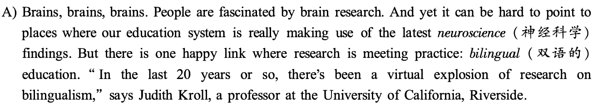
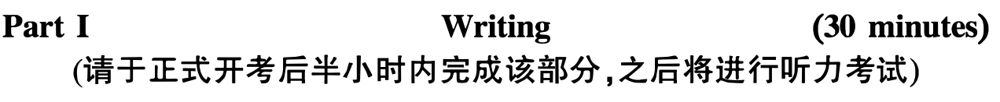

2020年9月英语六级考试试题第1套
Part II Listening Comprehension (30 minutes)
Section A
Directions : In this section , you will hear two long conversations. At the end of each conversation ,
you will hear four questions. Both the conversation and the questions will be spoken
only once. After you hear a question , you must choose the best answer from the four
choices marked A ) , B ) , C) and D) . Then mark the corresponding letter on Answer
Sheet 1 with a single line through the centre.
Questions 1 to 4 are based on the conversation you have just heard.
1 .
2.
3.
4.
Questions 5 to 8 are based on the conversation you have just heard.
5.
6.
7.
第 1／12页
8.
Section B
Directions : In this section , you will hear two passages. At the end of each passage , you will hear three or four questions. Both the passage and the questions will be spoken only once. After you hear a question , you must choose the best answer from the four choices marked A ) , B ) , --
through the centre.
Questions 9 to 11 are based on the passage you have just heard.
10.
1 1 . A) Help understand life in freezing conditions.
Questions 12 to 15 are based on the passage you have just heard.
12.
B ) He was trying to preserve the languages of the Indian tribes.
C ) His contact with a social worker had greatly aroused his interest in the tribe.
D ) His meeting with Gonzalez had made him eager to learn more about the tribe.
1 3. A ) He taught Copeland to speak the Tarahumaras language.
B ) He persuaded the Tarahumaras to accept Copeland's gifts.
C ) He recommended one of his best friends as an interpreter.
D ) He acted as an intermediary between Copeland and the villagers.
14.
B ) Unjustifiable. D ) Tedious.
第 2／12页
15. A ) Their appreciation of help from the outsiders.
B ) Their sense of sharing and caring.
C ) Their readiness to adapt to technology.
D ) Their belief in creating wealth for themselves.
Section C
Directions : In this section , you will hear three recordings of lectures or talks followed by three or four questions. The recordings will be played only once. After you hear a question , you must choose the best answer from the four choices marked A ) , B ) , C) and D ) . Then mark the corresponding letter on Answer Sheet 1 with a single line through the centre.
Questions 16 to 18 are based on the recording you have just heard.
16.
17.
1 8. A) They tried to effect social change by force.
Questions 19 to 21 are based on the recording you have just heard.
19.
20.
第 3／12页
21 .
Questions 22 to 25 are based on the recording you have just heard.
22.
23.
24.
25.
Part III Reading Comprehension ( 40 minutes)
Section A
Directions : In this section , there is a passage with ten blanks. You are required to select one word for each blank from a list of choices given in a word bank following the passage. Read the
passage through carefully before making your choices. Each choice in the bank is identified
by a letter. Please mark the corresponding letter for each item on Answer Sheet 2 with a single line through the centre. You may not use any of the words in the bank more than once.
Overall, men are more likely than women to make excuses. Several studies suggest that men feel the need to appear competent in all 26 , while women worry only about the skills in which they've invested 27 . Ask a man and a woman to go diving for the first time, and the woman is likely to jump in, while the man is likely to say he's not feeling too well.
Ironically, it is often success that leads people to flirt with failure. Praise won for 28 a skill suddenly puts one in the position of having everything to lose. Rather than putting their reputation on the line again, many successful people develop a handicap-drinking, 29 , depression-that allows them to keep their status no matter what the future brings. An advertising executive 30 for depression shortly after winning an award put it this way: " Without my depression, I'd be a failure now; with it, I'm a success ' on hold. ' "
In fact, the people most likely to become chronic excuse makers are those 3 1 with success. Such people are so afraid of being 32 a failure at anything that they constantly develop one
第 4／12页
本页部分文字层异常，已保留原图文字区域；这些区域随窗口缩放，暂不能重新换行或复制。
handicap or another in order to explain away failure. Though self-handicapping can be an effective way of coping with performance anxiety now and then, in the end, researchers say, it will lead to 33 . In the long run, excuse makers fail to live up to their true 34 and lose the status they care so much about. And despite their protests to the 35 , they have only themselves to blame.
Section B
Directions : In this section , you are going to read a passage with ten statements attached to it.
Each statement contains information given in one of the paragraphs. Identify the
paragraph from which the information is derived. You may choose a paragraph more
than once. Each paragraph is marked with a letter. Answer the questions by marking
the corresponding letter on Answer Sheet 2.
Six Potential Brain Benefits of Bilingual Education

B) Again and again, researchers have found, " bilingualism is an experience that shapes our brain for life," in the words of Gigi Luk, an associate professor at Harvard's Graduate School of Education. At the same time, one of the hottest trends in public schooling is what's often called dual-language or two-way immersion programs.
C) Traditional programs for English-language learners, or ELLs, focus on assimilating students into English as quickly as possible. Dual-language classrooms, by contrast, provide instruction across subjects to both English natives and English learners, in both English and a target language. The goal is functional bilingualism and biliteracy for all students by middle school. New York City,
第 5／12页
本页部分文字层异常，已保留原图文字区域；这些区域随窗口缩放，暂不能重新换行或复制。
North Carolina, Delaware, Utah, Oregon and Washington state are among the places expanding dual-language classrooms.
D) The trend flies in the face of some of the culture wars of two decades ago, when advocates insisted on " English first" education. Most famously, California passed Proposition 227 in 1998. It was intended to sharply reduce the amount of time that English-language learners spent in bilingual settings. Proposition 58, passed by California voters on November 8, largely reversed that decision, paving the way for a huge expansion of bilingual education in the state that has the largest population of English-language learners.

F) So what does recent research say about the potential benefits of bilingual education? It turns out that, in many ways, the real trick to speaking two languages consists in managing not to speak one of those languages at a given moment - which is fundamentally a feat of paying attention. Saying " Goodbye" to morn and then " Guten tag" to your teacher, or managing to ask for a

G) People who speak two languages often outperform monolinguals on general measures of executive function. " Bilinguals can pay focused attention without being distracted and also improve in the ability to switch from one task to another," says Sorace.
H) Do these same advantages benefit a child who begins learning a second language in kindergarten instead of as a baby? We don't yet know. Patterns of language learning and language use are complex. But Gigi Luk at Harvard cites at least one brain-imaging study on adolescents that shows similar changes in brain structure when compared with those who are bilingual from birth, even when they didn't begin practicing a second language in earnest before late childhood.
I) Young children being raised bilingual have to follow social cues to figure out which language to use with which person and in what setting. As a result, says Sorace, bilingual children as young as age 3 have demonstrated a head start on tests of perspective-taking and theory of mind - both of which are fundamental social and emotional skills.
J) About 10 percent of students in the Portland, Oregon public schools are assigned by lottery to dual-6 · 6
第 6／12页
language classrooms that offer instruction in Spanish, Japanese or Mandarin, alongside English. Jennifer Steele at American University conducted a four-year, randomized trial and found that these dual-language students outperformed their peers in English-reading skills by a full school year's worth of learning by the end of middle school. Because the effects are found in reading, not in math or science where there were few differences, Steele suggests that learning two languages makes students more aware of how language works in general.
K) The research of Gigi Luk at Harvard offers a slightly different explanation. She has recently done a small study looking at a group of 1 00 fourth-graders in Massachusetts who had similar reading scores on a standard test, but very different language experiences. Some were foreign-language dominant and others were English natives. Here's what's interesting. The students who were dominant in a foreign language weren't yet comfortably bilingual; they were just starting to learn English. Therefore, by definition, they had a much weaker English vocabulary than the native speakers. Yet they were just as good at interpreting a text. " This is very surprising," Luk says. " You would expect the reading comprehension performance to mirror the vocabulary - it's a cornerstone of comprehension."
L) How did the foreign-language dominant speakers manage this feat? Well, Luk found, they also scored higher on tests of executive functioning. So, even though they didn't have huge mental dictionaries to draw on, they may have been great puzzle-solvers, taking into account higher-level concepts such as whether a single sentence made sense within an overall story line. They got to the same results as the monolinguals, by a different path.
M) American public school classrooms as a whole are becoming more segregated by race and class. Dual-language programs can be an exception. Because they are composed of native English speakers deliberately placed together with recent immigrants, they tend to be more ethnically and economically balanced. And there is some evidence that this helps kids of all backgrounds gain comfort with diversity and different cultures.
N) Several of the researchers also pointed out that, in bilingual education, non-English-dominant students and their families tend to feel that their home language is heard and valued, compared with a classroom where the home language is left at the door in favor of English. This can improve students' sense of belonging and increase parents' involvement in their children's education, including behaviors like reading to children. " Many parents fear their language is an obstacle, a problem, and if they abandon it their child will integrate better," says Antonella Sorace of the University of Edinburgh. " We tell them they're not doing their child a favor by giving up their language."
0) One theme that was striking in speaking to all these researchers was just how strongly they
advocated for dual-language classrooms. Thomas and Collier have advised many school systems
第 7／12页
on how to expand their dual-language programs, and Sorace runs " Bilingualism Matters," an
international network of researchers who promote bilingual education projects. This type of
advocacy among scientists is unusual; even more so because the " bilingual advantage hypothesis"
is being challenged once again.
P) A review of studies published last year found that cognitive advantages failed to appear in 83
percent of published studies, though in a separate analysis, the sum of effects was still significantly
positive. One potential explanation offered by the researchers is that advantages that are
measurable in the very young and very old tend to fade when testing young adults at the peak of
their cognitive powers. And, they countered that no negative effects of bilingual education have
been found. So, even if the advantages are small, they are still worth it. Not to mention one
obvious, outstanding fact: " Bilingual children can speak two languages!"
3 6. A study found that there are similar changes in brain structure between those who are bilingual
from birth and those who start learning a second language later.
37. Unlike traditional monolingual programs, bilingual classrooms aim at developing students' ability
to use two languages by middle school.
38. A study showed that dual-language students did significantly better than their peers in reading
English texts.
39. About twenty years ago, bilingual practice was strongly discouraged, especially in California.
40. Ethnically and economically balanced bilingual classrooms are found to be helpful for kids to get
used to social and cultural diversity.
41 . Researchers now claim that earlier research on bilingual education was seriously flawed.
42. According to a researcher, dual-language experiences exert a lifelong influence on one's brain.
43. Advocates of bilingual education argued that it produces positive effects though they may be
limited.
44. Bilingual speakers often do better than monolinguals in completing certain tasks because they can
concentrate better on what they are doing.
45. When their native language is used, parents can become more involved m their children's
education.
第 8／12页
Section C
Directions : There are 2 passages in this section. Each passage is followed by some questions or unfinished statements. For each of them there are four choices marked A ) , B ) , C) and D ) . You should decide on the best choice and mark the corresponding letter on Answer Sheet 2 with a single line through the centre.
Passage One
Questions 46 to 50 are based on the following passage.
It is not controversial to say that an unhealthy diet causes bad health. Nor are the basic elements of healthy eating disputed. Obesity raises susceptibility to cancer, and Britain is the sixth most obese country on Earth. That is a public health emergency. But naming the problem is the easy part. No one disputes the costs in quality of life and depleted health budgets of an obese population, but the quest for solutions gets diverted by ideological arguments around responsibility and choice. And the water is muddied by lobbying from the industries that profit from consumption of obesity-inducing products.
Historical precedent suggests that science and politics can overcome resistance from businesses that pollute and poison but it takes time, and success often starts small. So it is heartening to note that a programme in Leeds has achieved a reduction in childhood obesity, becoming the first UK city to reverse a fattening trend. The best results were among younger children and in more deprived areas. When 28% of English children aged two to 15 are obese, a national shift on the scale achieved by Leeds would lengthen hundreds of thousands of lives. A significant factor in the Leeds experience appears to be a scheme called HENRY, which helps parents reward behaviours that prevent obesity in children. -----
Many members of parliament are uncomfortable even with their own government's anti-obesity strategy, since it involves a " sugar tax" and a ban on the sale of energy drinks to under- 16s. Bans and taxes can be blunt instruments, but their harshest critics can rarely suggest better methods. These critics just oppose regulation itself.
The relationship between poor health and inequality is too pronounced for governments to be passive about large-scale intervention. People living in the most deprived areas are four times more prone to die from avoidable causes than counterparts in more affluent places. As the structural nature of public health problems becomes harder to ignore, the complaint about overprotective government loses potency.
In fact, the polarised debate over public health interventions should have been abandoned long ago. Government action works when individuals are motivated to respond. Individuals need governments that expand access to good choices. The HENRY programme was delivered in part through children's centres. Closing such centres and cutting council budgets doesn't magically increase reserves of individual self-reliance. The function of a well-designed state intervention is not to deprive people of liberty but to build social capacity and infrastructure that helps people take responsibility for their wellbeing. The obesity crisis will not have a solution devised by left or right ideology-but experience indicates that the private sector needs the incentive of regulation before it starts taking public health emergencies seriously.
第 9／12页
46. Why is the obesity problem in Britain so difficult to solve?
47. What can we learn from the past experience in tackling public health emergencies?
48. What does the author imply about some critics of bans and taxes concerning unhealthy drinks?
49. Why does the author stress the relationship between poor health and inequality?
50. When will government action be effective?
Passage Two
Questions 51 to 55 are based on the following passage.
Home to virgin reefs, rare sharks and vast numbers of exotic fish, the Coral Sea is a unique haven of biodiversity off the northeastem coast of Australia. If a proposal by the Australian government goes ahead, the region will also become the world's largest marine protected area, with restrictions or bans on fishing, mining and marine farming. The Coral Sea reserve would cover almost 990,000 square kilometres and stretch as far as 1,100 kilometres from the coast. Unveiled recently by environment minister Tony Burke, the proposal would be the last in a series of proposed marine reserves around Australia's coast.
第 10／12页
But the scheme is attracting criticism from scientists and conservation groups, who argue that the government hasn't gone far enough in protecting the Coral Sea, or in other marine reserves in the coastal network.
Hugh Possingham, director of the Centre of Excellence for Environmental Decisions at the University of Queensland, points out that little more than half of the Coral Sea reserve is proposed as a ' no take ' area, in which all fishing would be banned. The world's largest existing marine reserve, established last year by the British government in the Indian Ocean, spans 544,000 km2 and is a no take zone throughout. An alliance of campaigning conservation groups argues that more of the Coral Sea should receive this level of protection.
" I would like to have seen more protection for coral reefs," says Terry Hughes, director of the Centre of Excellence for Coral Reef Studies at James Cook University in Queensland. " More than 20 of them would be outside the no-take area and vulnerable to catch-and-release fishing" .
As Nature went to press, the Australian government had not responded to specific criticisms of the plan. But Robin Beaman, a marine geologist at James Cook University, says that the reserve does " broadly protect the range of habitats" in the sea. " I can testify to the huge effort that government agencies and other organisations have put into trying to understand the ecological values of this vast area," he says.
Reserves proposed earlier this year for Australia's southwestem and northwestem coastal regions have also been criticised for failing to give habitats adequate protection. In August, 173 marine scientists signed an open letter to the government saying they were " greatly concerned" that the proposals for the southwestem region had not been based on the " core science principles " of reserves-the protected regions were not, for instance, representative of all the habitats in the region, they said.
Critics say that the southwestem reserve offers the greatest protection to the offshore areas where commercial opportunities are fewest and where there is little threat to the environment, a contention also levelled at the Coral Sea plan.
5 1 . What do we learn from the passage about the Coral Sea?
52. What does the Australian government plan to do according to Tony Burke?
第 11／12页
本页部分文字层异常，已保留原图文字区域；这些区域随窗口缩放，暂不能重新换行或复制。

Part IV Translation (30 minutes)
Directions : For this part , you are allowed 30 minutes to translate a passage from Chinese into
English. You should write your answer on Answer Sheet 2.
----

Directions : For this part , you are allowed 30 minutes to write an essay on the saying " Beauty of
the soul is the essential beauty. " You should write at least 150 words but no more
than 200 words.
第 12／12页